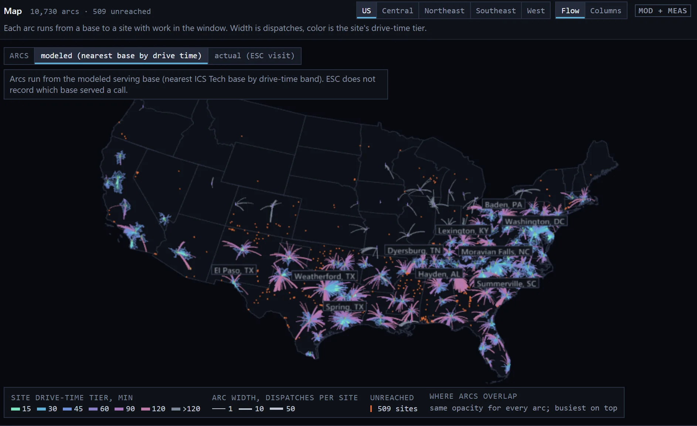

Spyglass Terminal
Operations instrument · 2026 · Interior Climate SolutionsOne screen where sales, operations and leadership read a year of service calls against where our technicians can reach. It is the densest page in Spyglass, the coverage suite I started in August.

Modeled flow. Each arc runs from a base to a site with work in the window. Width is dispatches, color is the site's drive-time tier.
The rules it is built to
- One grid with 1px gaps over a line-colored shell, so every panel edge is a hard hairline. No rounded cards, shadows or glass.
- Nothing renders under 11px. Density comes from showing fewer things at once, not from shrinking the type.
- Every number says where it came from: measured from the records, or modeled.
- Motion only where a value changed. Nothing loops.
Why it exists
A response-time promise depends on where the technicians are. The modeled view shows which base should serve each site. The actual view shows who drove there.
The page puts both on one map, so the difference between the plan and the year is something you can see.
How it was made
- Role
- Design, direction and review. I wrote the design rules and the contract for each page; Claude and Codex agents wrote most of the code against them.
- Front end
- Plain HTML, CSS and ES modules with deck.gl for the map. No framework and no build step.
- Data
- A Python pipeline that turns the dispatch records into static files on a schedule.